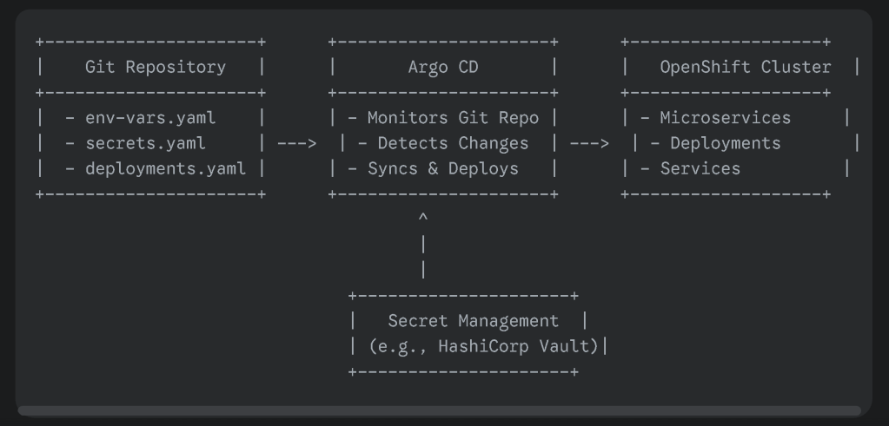

Managing Environment Variables in Git for OpenShift Microservices with ArgoCD

Introduction
In today's world of microservices, managing environment variables efficiently is crucial. Traditionally, these variables were hardcoded or stored in configuration files. However, this approach can lead to security risks and operational challenges. A more secure and flexible approach is to store environment variables in a Git repository and deploy them using a tool like ArgoCD.
Why Use Git for Environment Variables?
-
Version Control: Git allows you to track changes to your environment variables, making it easier to roll back if necessary.
-
Collaboration: Multiple team members can collaborate on environment variable management.
-
Security: Storing sensitive information in a Git repository can be secured using techniques like encrypted secrets.
-
Automation: Tools like ArgoCD can automatically detect changes to your Git repository and deploy updates to your OpenShift environment.
Architecture Overview
Here's a high-level overview of the architecture we'll be discussing:
- Git Repository:
Store environment variables in a YAML or properties file.
-
Use Git's branching and merging features to manage different environments (e.g., development, staging, production).
-
Consider using a secret management tool like HashiCorp Vault to securely store sensitive information.
-
ArgoCD:
Continuously monitors your Git repository for changes.
-
Detects changes to the environment variable files.
-
Triggers a deployment to your OpenShift cluster.
-
Ensures that your applications are always up-to-date with the latest environment variables.
Implementing the Solution
- Create a Git Repository:
Initialize a new Git repository for your environment variables.
-
Create a YAML file or properties file to store the variables.
-
Commit and push your changes to the repository.
-
Configure ArgoCD:
Define an application in ArgoCD to point to your Git repository.
-
Specify the deployment strategy (e.g., rolling update, blue-green deployment).
-
Configure the necessary parameters for your OpenShift deployment (e.g., image name, namespace).
-
Spotting Updated Variables in ArgoCD After approving changes in GitHub, ArgoCD will automatically detect the updates and trigger a synchronization process. You can monitor this process in the ArgoCD UI:
Application Details Page:
Check the "Sync Status" section to see if the application is synchronizing.
-
Look for any errors or warnings that might indicate issues with the deployment.
-
Activity Feed:
Review the recent activity to see the details of the synchronization process, including any changes to the environment variables.
Best Practices
-
Use a Structured Approach: Organize your environment variables into logical groups.
-
Leverage Secret Management: Use tools like HashiCorp Vault to securely store sensitive information.
-
Automate Testing: Implement automated tests to ensure that your applications work correctly with the new environment variables.
-
Monitor Deployments: Use monitoring tools to track the health of your applications and identify potential issues.
Conclusion
By following these steps and best practices, you can effectively manage environment variables in your OpenShift microservices using Git and ArgoCD. This approach provides a secure, efficient, and scalable solution for your infrastructure.
Notes
+---------------------+ +---------------------+ +-------------------+
| Git Repository | | Argo CD | | OpenShift Cluster |
+---------------------+ +---------------------+ +-------------------+
| - env-vars.yaml | | - Monitors Git Repo | | - Microservices |
| - secrets.yaml | ---> | - Detects Changes | ---> | - Deployments |
| - deployments.yaml | | - Syncs & Deploys | | - Services |
+---------------------+ +---------------------+ +-------------------+
^
|
|
+---------------------+
| Secret Management |
| (e.g., HashiCorp Vault)|
+---------------------+
Explanation:
-
Git Repository: This is where you store all your configuration files, including environment variables (
env-vars.yaml), secrets (secrets.yaml), and deployment manifests (deployments.yaml). -
Argo CD: This is the continuous deployment tool that monitors your Git repository. When it detects changes in any of the configuration files, it automatically syncs and deploys the updates to your OpenShift cluster.
-
OpenShift Cluster: This is where your microservices are hosted. Argo CD deploys the updated configurations, including environment variables, to the relevant deployments and services in your cluster.
-
Secret Management: This is an optional component, but highly recommended for storing sensitive information like API keys, database credentials, etc. Tools like HashiCorp Vault can encrypt and securely manage these secrets.
Visual Enhancements:
-
Use different shapes to represent each component (e.g., rectangle for Git repo, cylinder for Argo CD, cloud for OpenShift cluster).
-
Use arrows to indicate the flow of information and control.
-
Add colors to visually distinguish different parts of the architecture.
-
Include labels and annotations to provide more context.
This visual representation will help you better understand and communicate the architecture for managing environment variables in your OpenShift microservices using Git and Argo CD.
Imported from rifaterdemsahin.com · 2025